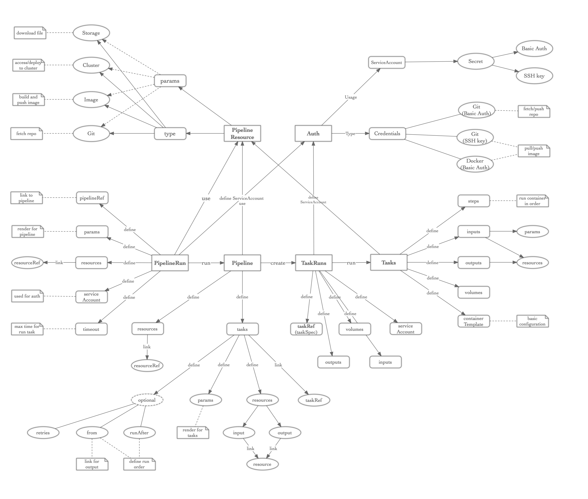

Intro to Tekton
Kubernetes-native CI/CD building blocks.
Install
- 获取一个 Kubernetes 集群，可以通过:
- 谷歌云上创建一个 GKE 集群
- k8s playground 可以快速测试
- docker for mac/windows 新版的 docker 提供了一个 Kubernetes 集群，可以用于本地测试
- kind Kubernetes IN Docker 可以快速构建和安装 Kubernetes 集群，用于自动化测试
- （确保当前操作的用户有 cluster-admin 权限）
- 安装 Tekton:
kubectl apply --filename https://storage.googleapis.com/tekton-releases/latest/release.yaml
Core concepts
Task: 作为 pipeline 的基本单位，定义了一组需要运行的操作(steps)；可以多个 task 组成 pipeline，也可以独立运行
Pipeline: 用来编排一个或多个 task，并配置运行 task 需要的资源以及参数
TaskRun: 用来关联和触发运行 task
PipelineRun: 用来关联和触发运行 pipeline
PipelineResource: 用来定义执行 task 或者 pipeline 时需要的资源，比如 git repo，镜像等
Workflow
- 定义自己的 Task，包括定义具体要运行的操作（
steps），输入输出，数据卷和容器模板steps提供了一个运行的容器环境，以及需要进行的操作；一个task可以有多个step，每一个step顺序执行inputs/outputs提供了执行流水线时需要的资源及变量配置，比如可以预先拉取好 git repo，build 镜像等volumes提供数据卷给构建的容器使用，可以用于存储或者传递数据等，或者读取配置文件containerTemplate提供模板的功能，比如定义环境变量，可以作用于每一个 step 的执行环境中
- 创建
TaskRun来关联和触发定义好的Task- 可以通过
taskRef的方式来管理task；或者直接通过inline的模式，定义task的taskSpec - 可以指定
serviceAccount来用于做认证（比如拉取 git 仓库的代码）；未指定时，默认使用当前 namespace 的 default service account - 可以指定
timeout来配置超时时间 inputs/outputs定义执行task时的变量以及资源- 可以通过修改
status为TaskRunCancelled来取消任务
- 可以通过
- 也可以定义自己的
Pipeline，通过流水线来编排多个taskresources定义了执行pipeline时用到的资源tasks定义了流水线要执行的任务以及任务的编排关系- 通过
from或runAfter可以隐示或者显示的定义执行的任务顺序 - 没有依赖或者顺序相关的任务，会并行执行
retries定义了任务失败时重试的次数，比如临时网络中断造成的构建失败；默认是不重试的
- 创建
PipelineRun来关联和触发定义好的Pipeline- 通过
pipelineRef来管理pipeline - 可以指定
serviceAccount来用于做认证（比如拉取 git 仓库的代码）；未指定时，默认使用当前 namespace 的 default service account - 可以指定
timeout来配置超时时间 - 可以指定
resources来定义执行pipeline时用到的资源 - 可以通过修改
status为PipelineRunCancelled来取消流水线
- 通过
Auth
可以通过配置 ServiceAccount 以及关联的 secret 的方式，来方便配置用于访问 git 或者 docker 镜像仓库的认证信息。基本流程如下：
- 创建一个
ServiceAccount，包含了用到的认证资源信息，通过给出 secret name 的方式，与实际的 auth 配置绑定 - 创建
secret，包含basic-auth和ssh-auth两种方式，提供用于登陆镜像仓库或者访问 git 仓库需要的用户名密码信息；或者提供用于访问git 仓库的 ssh key 信息 - 在创建
TaskRun或者PipelineRun时，指定使用的ServiceAccount。在后续执行task时，会在执行task前，预先把认证的配置文件，放置到运行的容器环境中 - 在执行
task时，直接拉去代码仓库或者镜像仓库即可
In one map

Demo(TODO)
build tekton with tekton
build k8s from source and run conformance test with tekton and kind
Anything except the tekton core
- UI: 提供创建和管理的界面 e.g. dashboard
- 多租户: 支持不同用户、不同租户的权限控制和管理
- 资源 qos: 限制资源消耗，保证集群稳定性
- API: 提供 api 接口供外部调用，比如使用 nirvana
- trigger: 支持 github gitlib 条件或者手动触发
- plugin: 支持 plugin 功能以支持更多的需求，比如 svn 的处理
Next
Copyright © 2015 Powered by MWeb, Theme used GitHub CSS.